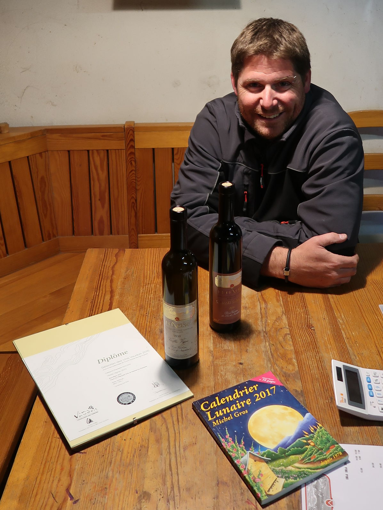
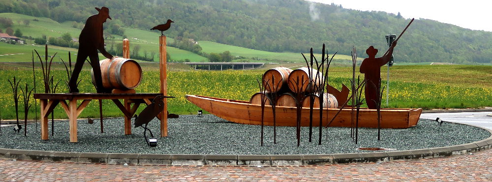

le vigneron
six générations, six artisans
martial, jeune vigneron, t’accueille chaleureusement dans la cour qui sépare la magnifique bâtisse en pierres jaunes, construction typique de la région et classée, et la grange dont la vieille porte en bois cache la cave et ses trésors
devant celle-ci une rangée de fûts confirme que t’es chez un professionnel que la dégustation ne démentira pas
une poignée de main qui laisse paraître la pénibilité du métier mais aussi la souplesse des arômes de ses vins et le plaisir de te les faire connaître
au carnotzet, tu te sens tout de suite à l’aise
on cause vigne, récoltes, vinification et tu écoutes tout ça et cet accent chanteur et enchanteur tout en découvrant des vins que t’as pas idée qu’ils puissent être si bons alors que dans tes souvenirs d’il y a quarante ans on disait que les blancs d’ici rayaient les vitres
aujourd’hui, tu ne les railleras plus, ils sont bons, élégants et t’auras tant de plaisir à les déguster !
déguster
chasselas
fruité, un bon goût de chasselas
idéal à l’apéro ou avec un poisson du lac
chasselas vieilles vignes
un vrai régal ! chaque lampée t’apporte son lot de surprises : gras avec du fruit, de la longueur… du plaisir
à l’apéro ou avec un ragoût d’asperges et une mayonnaise au citron vert et gingembre
pinot gris
magnifique, supportera quelques années de garde
avec une fricassée de bolets ou un curry
œil de perdrix
plein de soleil, un vrai œil de perdrix digne des plus grands
à l’apéro sous une tonnelle ou avec un plat asiatique ou un poisson ou une grillade même s’il pleut
découvrir
pinot blanc légèrement doux
très sympa et surprenant
plutôt pour finir un repas ou avec un dessert très doux
qui ?
Cave
Martial Du Pasquier
Propriétaire encaveur
Route cantonale 4
1426 Concise
024 434 16 50 – 079 759 48 43 - info@cavedupasquier - www.cavedupasquier
y aller
après yverdon-les-bains, par l’autoroute, sortie grandson, puis à droite la
grand’route direction neuchâtel
après le passage de plusieurs ronds-points magnifiquement décorés sur le thème des travaux de la vigne et qui a eux seuls méritent le détour, à l’entrée du village tout de suite après le panneau concise, sur la droite une grande enseigne t’indique l’entrée du domaine qui se trouve en plein dans l’appelation bonvillars
et là, tu te trouves dans la cour qui sépare la maison de la cave et t’as l’impression d’être passé dans un autre temps où l’on prenait le temps de faire les choses

le resto
Restaurant des Quais
Chemin du Lac 43
1422 Grandson – 024 445 24 84
sympa
régulièrement, le domaine organise des repas dégustations comme les 3 et 4 juin portes ouvertes cantonales, le 15 juillet une paella, le 19 août des grillades (vous trouverez tous les détails sur leur site)
et
à la sortie de l’autoroute, tu peux également suivre la route du vignoble, direction bonvillars, champagne des noms qui sonnent bien l’apéro
et découvrir ces vignes coincées entre le jura et le lac de neuchâtel, séchées par la bise et humidifiées par le brouillard qui se réchauffe le long des côtes de ce lac magnifique
et
faisant partie de l’histoire de ce village qui remonte très loin, on peut encore voir les restes d’une carrière de l’époque romaine et même des menhirs